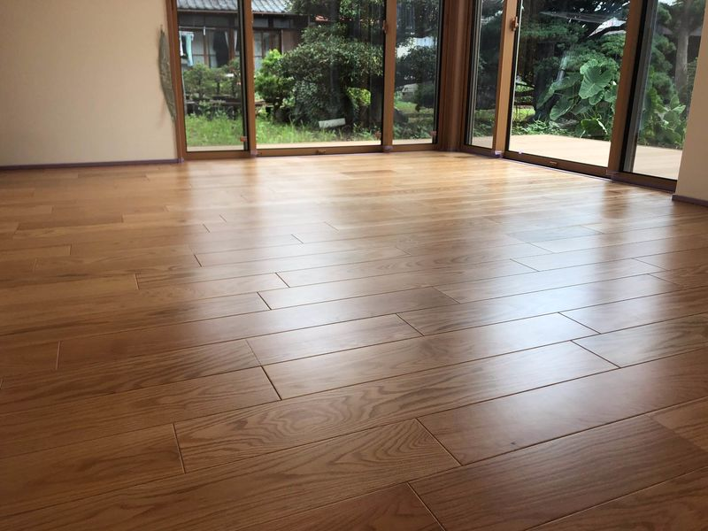
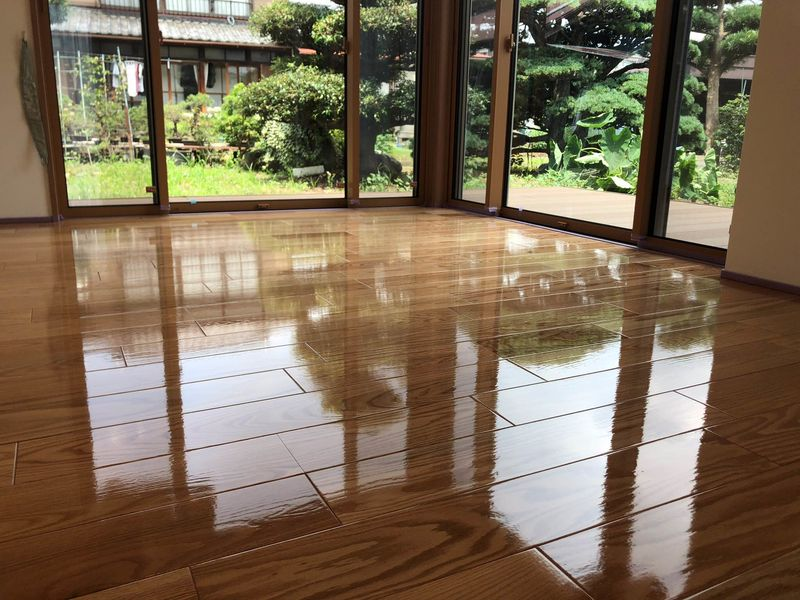

光が流れる廊下で、毎日の足取りをサポート
透明感のある仕上がりは、掃き掃除や拭き取りのしやすさにもつながり、ペットと暮らす廊下の印象を明るく整えます。
小型犬の足元に配慮したグリップ感により、長い廊下の行き来でも安心感のある歩きやすさを目指した施工です。【ペットの床】ならではの、暮らしに溶け込む質感をぜひご覧ください。
PRODUCT
PET FLOOR COATING
この家でずっと元気でいてほしい — 床を愛犬の歩行に寄り添う表面へ。
無料お見積り・現地調査を相談する
OVERVIEW
犬の専門店CUCUL・施工を担うCUCUL＊FMがお勧めするペットの床は、フローリング表面にペットの歩行に配慮した適度なグリップ性を与えるUVフロアコーティングです。滑りやすい床に起因しやすいケガのリスク低減に寄与しつつ、 シミやキズから床材を守り、日々のお掃除で清潔さを保ちやすくします。
BEFORE / AFTER
施工前と施工後の比較です。写真は艶ありVer.(艶なしを選ぶこともできます。) ※床材により、写真とは仕上がりが異なる場合があります。
BEFORE

AFTER

PROCESS
養生・下地から塗布、UV硬化、研磨まで基本的には1日で施工が完了します。工程のイメージでご覧ください。
FLOW
家具まわりを保護し、床面の汚れを丁寧に取り除きます。
床材の状態を確認し、密着性を高める下処理を行います。
UVフロアコーティングを均一に塗り広げます。
専用ライトの照射でその場で硬化。長い乾燥待ちがありません。
表面を整え、仕上がりを確認してお引き渡しです。
※ 施工範囲や床の状態により所要時間は前後します。
CASE STUDIES
施工後の廊下の様子を動画でご覧ください。音声なし・自動でループ再生します。
透明感のある仕上がりは、掃き掃除や拭き取りのしやすさにもつながり、ペットと暮らす廊下の印象を明るく整えます。
小型犬の足元に配慮したグリップ感により、長い廊下の行き来でも安心感のある歩きやすさを目指した施工です。【ペットの床】ならではの、暮らしに溶け込む質感をぜひご覧ください。
ABOUT
ペットの床は、ククルFMがお届けする自社ブランドのフロアコーティングです。犬との暮らしに寄り添う表面仕上げと、日々のお手入れのしやすさを両立し、人とペットが安心して過ごせる住環境づくりをサポートします。
FEATURES
すべりやすいフローリングに、小型犬の歩行に適したグリップ感を付与。室内での転倒・急な方向転換に伴う負担の軽減に役立ちます。
※床材の種類・経年状態、犬の年齢・体型・既往症などにより体感は異なります。
厚生労働省が定める「食品衛生上の取扱いに適した合成樹脂製器具」に関する試験に適合したコーティング材を使用。日常の拭き取りや洗剤を使ったお手入れと相性よく、衛生的な環境づくりを後押しします。
粗相や食べこぼしなどからフローリングを保護し、汚れの付着を抑えます。中性洗剤やアルコール・次亜塩素酸水、スチームモップの使用にも対応します。
※完全な防水ではなく、目地部への水の浸入を防ぐ効果はありません。
専用機器で紫外線を照射し、塗膜を瞬時に硬化。工事完了後、その日のうちに普段どおりの生活がしやすいのが特長です。床暖房対応の不燃性樹脂を使用します。
※工程・養生は現地条件により異なります。
滑りやすさが気になったら、まずは無料の現地調査から。
無料お見積り・現地調査を相談するWHY FLOOR
小型犬では、フローリングの滑りが原因の骨折や脱臼が決して珍しくありません。軽い不調を見逃すと慢性化し、医療的な負担が大きくなることもあります。
滑り止め目的の敷物は有効な一方、抜け毛や汚れが絡みやすく、ダニや雑菌の温床になりやすい面も。清潔に保つ手間を考えると、床そのものの対策も選択肢になります。
一般的なペット向けワックスは持続が短く、フローリングの美観や保護性能では物足りないことがあります。専用コーティングは耐久とお手入れ性のバランスを重視して設計されています。
JOINT CARE
室内犬に多い膝蓋骨内方脱臼や椎間板ヘルニアなどは、一度発症すると完治が難しく長期的なケアが必要になる場合があります。滑りにくい床は「転ばない・急に捻らない」ための予防の一助になります。コーティングは万能ではありませんが、住環境全体の一要素として前向きに検討いただけます。
FAQ
施工後は、ペット向けフローリングと比較しておおよそ2倍程度の滑りにくさを目安にできる場合があります。ただし床材の種類・状態、犬の個体差により効果は異なります。詳細はお問い合わせください。
滑り対策には一定の効果が期待できますが、小型犬と比べると差が出る場合があります。掃除のしやすさや衛生面を重視して導入される飼い主さんも多いです。
施工面積、フローリングの種類・下地の状態により異なります。無料のお見積り・現地調査にてご提案します。
床暖房のフローリングにも対応可能です。不燃性樹脂であり耐熱性が高く、スチームモップもご利用いただけます。
補修に応じられる場合があります。施工上の不具合と判断した場合は保証範囲内で対応するケースもあります。詳細は契約時にご確認ください。
既存住宅への施工が可能です。UV硬化のため、長期間の養生で生活が制限されにくいのが特長です。大型家具の移動サポートなどはお問い合わせください。
記載の仕様・効果は一般的な説明に基づきます。医療・保証・価格については個別契約・現地調査の結果を優先します。表記は2025年時点の案内です。